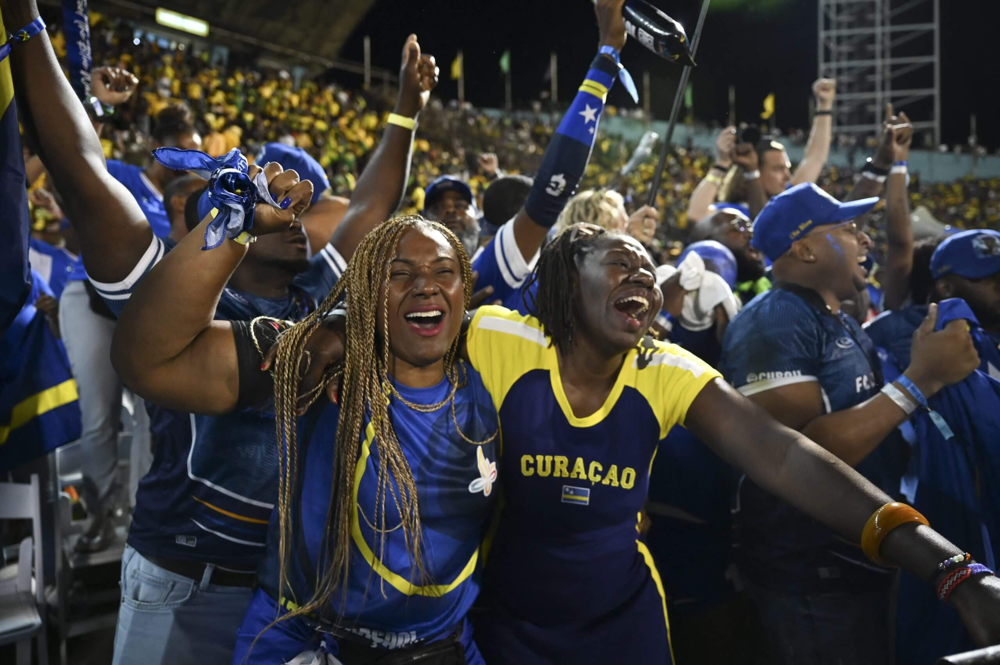
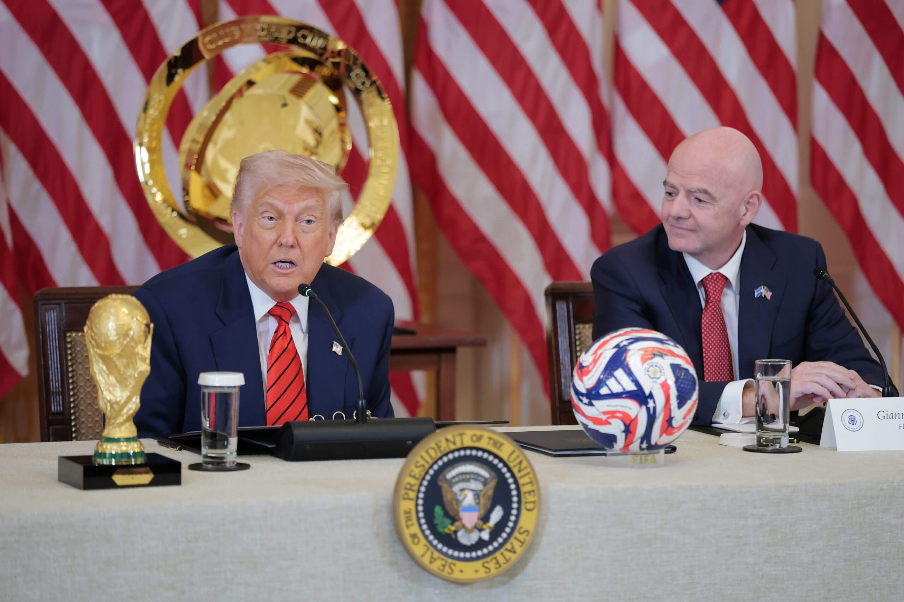
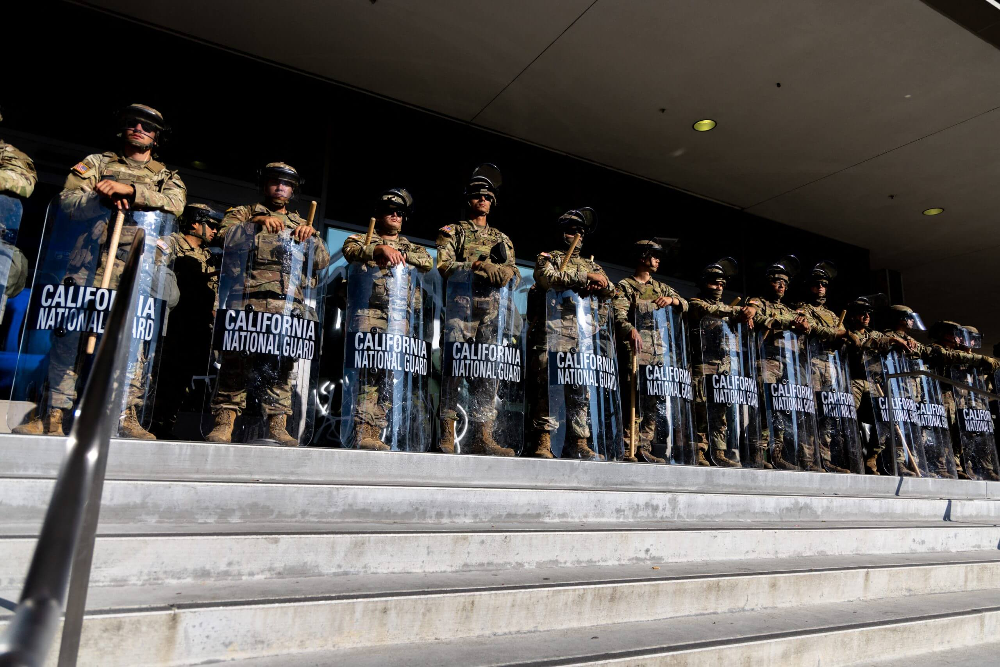
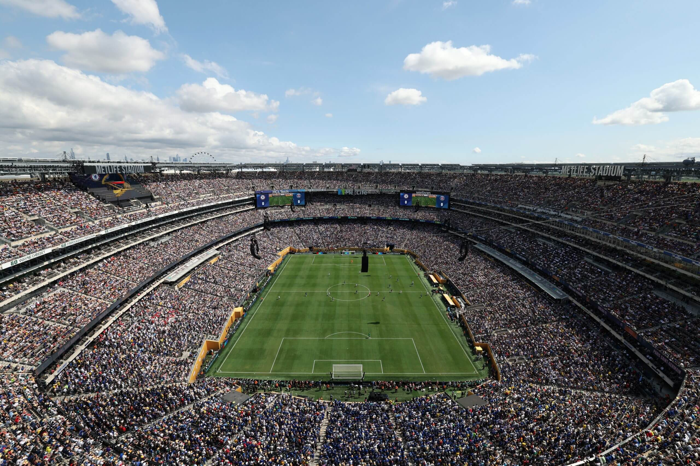
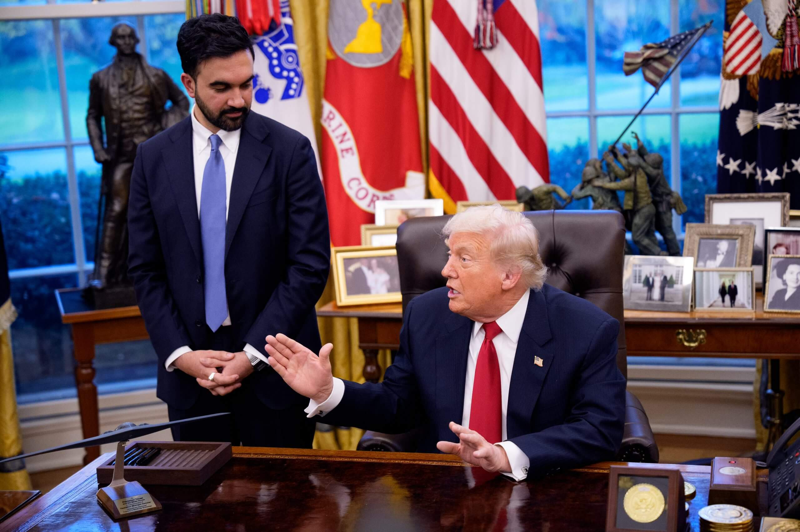

The 2026 World Cup is within touching distance but there's work to do yet Mustafa Yalcin/Anadolu via Getty Images
The next men’s FIFA World Cup is now 200 days away and 42 nations — including its co-hosts the United States, Canada and Mexico — have secured their places in the expanded 48-team competition.
Seventy-five per cent of matches will be played in the U.S. across 11 cities. Mexico will host the opening matchday in Mexico City and Guadalajara, but the involvement of both it and Canada, in terms of venues anyway, will cease after the round of 16, with all games from the quarter-finals onwards to be played in the States, including the final at MetLife Stadium in the state of New Jersey, a few miles west of New York City.
Speaking on a media call earlier this year with U.S. rights holders Fox Sports, former USMNT forward Landon Donovan said: “I don’t think there’s any doubt that this will be the biggest sporting event in the history of the planet.”
As the clock ticks down, The Athletic details just some of the most pressing challenges, reputational risks and supporter concerns about the U.S. portion of the competition, which will encompass 78 of the 104 World Cup games played between June 11 and July 19 next year.
Who has qualified?
First, the good news for FIFA, football’s global governing body and organizer of the four-yearly men’s World Cup. This expanded tournament, up from 32 teams at the previous finals in Qatar in 2022 to 48, guarantees a bigger number of star names than any previous World Cup, and for a North American sports ecosystem that treasures characters and moments, that may be a surefire recipe for success.
Cristiano Ronaldo, Lionel Messi and Mohamed Salah appear set for one final dance with Portugal, Argentina and Egypt respectively in their thirties and forties, Kylian Mbappe and Jude Bellingham are in line to star for France and England, and there will be World Cup debuts for Lamine Yamal of Spain and Norway’s Erling Haaland.
Combine such marquee names with the North American ticketing market, and the eyeballs the World Cup gets regardless, and FIFA should attract some very big numbers. FIFA has forecasted $13billion in revenue for the four-year cycle from 2023. This also factors in revenues from the 2023 Women’s World Cup, this past summer’s expanded men’s Club World Cup, and its annual licensing and sponsorship income, but the men’s World Cup constitutes by far the greatest share. The expanded tournament field also brings an increase in the total number of World Cup games from 64 to 104, all of which explains why FIFA’s projections dwarf the $7.5bn it earned over the Qatar 2022 cycle.

Curacao fans celebrate the Caribbean country’s first World Cup qualificationRicardo Makyn/AFP via Getty Images
A full list of the 42 countries to have qualified so far can be found here.
For the final six places, there will be four more European nations, decided by play-offs involving 16 teams taking place in March. The other two spots will be decided by inter-confederation play-offs held in Mexico in that same international window. Jamaica and New Caledonia will play a one-off semi-final to earn the right to play DR Congo in a single-leg final, the winner qualifying for the World Cup. The same goes as Bolivia or Suriname faces Iraq.
Political challenges: Visas, ICE and travel bans?
On the surface, the return of President Donald Trump to the White House in January represents positive news for FIFA. In his Oval Office, sandwiched between an ornament of Abraham Lincoln and below a U.S. flag, we often see his replica of the World Cup trophy at presidential news conferences.
He has also welcomed FIFA president Gianni Infantino into the White House and established a White House Task Force to organize the competition, entrusting Andrew Giuliani, son of former New York City mayor and Trump ally Rudy Giuliani, to direct the group.
Trump and Infantino could hardly be closer. The FIFA president rarely misses a chance to post glowingly about Trump on Instagram and appears to spend more time in the Oval Office than any world leader. FIFA has taken an office in Trump Tower in New York City and recently announced that the inaugural FIFA peace prize will be awarded at the draw on December 5. Infantino, during a recent conference appearance in Miami, when he showered praise on Trump, has hinted the award will be given to the current U.S. president.

Presidents Trump and Infantino with the World Cup trophyAnna Moneymaker/Getty Images
It is not entirely clear whether this has been a calculated strategy by Infantino to flatter Trump into assisting the World Cup, or whether he is simply in awe of him, or some amalgamation of the two. However, it has led to some wins for FIFA. Following intense campaigning from FIFA and host cities, which spent hundreds of thousands of dollars on D.C. lobbyists, the Trump administration finally approved $625mllion in federal funding to assist security costs with the competition earlier this year.
The U.S. host cities have other concerns, though. Inbound travel is crucial to the success of the competition, with the hope being that the local, state and federal tax dollars invested will be recouped come June and July through foreign-visitor spending. Infantino claimed earlier this year that the Club World Cup, which was staged in the United States in summer 2025, and men’s World Cup would bring almost a combined $50billion in economic impact.
More recently, he predicted $30billion in economic impact for the U.S. alone from the latter tournament. Yet U.S. Travel has forecast a 6.3 per cent decrease for inbound international visits in 2025 amid negative sentiment towards the country from some markets, partially due to tariffs. The White House’s World Cup task force and FIFA appear to be aware that messaging is required to reassure traveling fans that the U.S. is a welcoming environment.
Republican congressman Darin LaHood, co-chair of the Congressional Soccer Caucus, recently said that FIFA will use ex-players to spread the word: “We have to have a strong welcoming message to the United States — we are going to partner with our FIFA legends in all the countries around the world to have messaging that will go out probably in December or January, welcoming people to the United States for soccer, for sport, for the World Cup. And that will be an important PR, communications mechanism that we’re working on in the White House now.”
However, the Trump administration has made deportations and a clampdown on illegal immigration key objectives. The president signed executive orders banning travel by citizens from over a dozen countries — including Iran and Haiti, which have both qualified for the World Cup. While exemptions are made for major sporting competitions in the cases of athletes, support staff and immediate relatives, the State Department confirmed to The Athletic this week that exceptions will not be made for fans unless the individuals applying can demonstrate they are advancing a U.S. “national interest.” The State Department warned that such exemptions would be rare.
On top of that, a long-standing issue for the U.S. government has been visa wait-times for tourists. This is particularly important in relation to the World Cup as many fans usually wait until after the group-stage draw to make their travel and hotel bookings for the tournament, as only then will they know the cities, and in this case countries, in which their team are playing their three opening-round games. Wait times in Colombia and Ecuador, for example, are close to a year.
This week, in yet another Oval Office news conference, Infantino and Trump announced a new FIFA Pass, which Secretary of State Marco Rubio said would lead to visa appointments for FIFA ticket holders within “six to eight weeks” of applying. He did, however, warn that “a ticket is not a visa and it doesn’t guarantee admission to the U.S.”, with ticket holders subject to the same rigorous screening and vetting as any other individuals. They will still be required to prove continuing ties with their home nation and convince consular officers they have no intent of overstaying their tourist visa, while enhanced social-media vetting has also been taking place under the new administration.
This week, during private conversations, some FIFA officials have suggested this concession justifies the steps Infantino has taken to woo the White House, while others may argue it still falls short of the letter, signed by Trump himself during the bid process in 2018, in which he said he was confident that “all eligible athletes, officials and fans from all countries around the world would be able to enter the United States without discrimination”.
Relationships between the U.S. government, host cities and its neighbors
In recent months, the World Cup has found itself in the crosshairs of tension between the White House and several of the 11 U.S. host cities. Trump has outlined “safety” concerns, sometimes without much detail, regarding Seattle, Boston and Los Angeles. He has repeatedly stated he would be prepared to move World Cup games currently allotted to host cities to different locations if he is not satisfied they will be safe for attendees or if local politicians do not comply with his wishes.
The U.S. government’s attempts to hit deportation targets have seen the National Guard and Immigration and Customs Enforcement (ICE) officials go into cities, including Los Angeles. Ahead of the Club World Cup in the States in June and July this year, the Trump administration deployed National Guard troops in LA after protests against immigration arrests.

The National Guard was brought in after protests in Los AngelesBenjamin Hanson/Middle East Images/AFP via Getty Images
The Athletic reported in September that FIFA had received 145 reports relating to human rights concerns at the Club World Cup, many of which were complaints submitted by supporters through the governing body’s own grievance mechanism portal. The highest number of these related to fans expressing concerns about U.S. government policies or their enforcement.
They included 37 complaints categorized as being related to federal policies or enforcement. Some of these included fans raising concerns as to whether the tournament and next summer’s World Cup should be held in the U.S. at all, citing the actions, policies and words of the administration under Trump. Other complaints centred on alleged sightings of U.S. Customs and Border Protection (CBP) and ICE officials at stadiums during the tournament.
In a statement to The Athletic, a Department of Homeland Security (DHS) spokesperson said that despite the reports made to FIFA, neither ICE nor CBP conducted enforcement, describing it as “another case of fear-mongering”.
On Monday, Trump said to reporters in the White House: “If we think there is going to be a sign of any trouble, I would ask Gianni (Infantino) to move that to a different city. We have a lot of cities who would love to have it and would do it very safely. If we think there is a problem in Seattle, where there is a liberal, Communist mayor (democratic socialist Katie Wilson has recently been elected)… I watched her over the weekend… wow, that is another ‘beauty’ we have got there. Gianni, can I say we will move the event to some place it will be appreciated and safe?”
Infantino answered: “Safety and security is the number one for a successful World Cup. We can see people have trust in the United States because we have record-breaking ticket sales. Tickets are almost two million sold already. People know they will be coming here to experience a safe and secure World Cup. This, of course, is the responsibility of the government and obviously we will discuss. We are working together. We must ensure all fans coming from abroad can experience a celebration of coming together of the sport and with 100 per cent safety.”

MetLife Stadium will stage the World Cup final on July 19Charly Triballeau/AFP via Getty Images
FIFA has previously said it will defer to the federal government on where games are played, a position that has infuriated host-city executives. Several of the latter, speaking anonymously to protect relationships, are frustrated that FIFA has not given more backing to the cities, particularly as FIFA’s contracts are with them, rather than the U.S. government.
The Athletic reported on Thursday that some host-city executives are even privately questioning why they should bother continuing to invest money into FIFA’s events when the body’s officials appear so reluctant to defend them publicly. It is particularly frustrating for the cities because they are seeking to sell sponsorship deals for local fan festivals, and tickets are already on sale.
When Trump was asked about this issue by reporters on Monday, he urged local businesses to tell their state’s governor, particularly in Los Angeles, to ask for federal help. “The governors and mayors are going to have to behave,” he replied.
FIFA’s challenge has also been exacerbated by Trump’s situation with co-hosts Canada and Mexico, where trade wars and tariffs have soured relations between the U.S. and its northern and southern neighbors.
Infantino has not appeared publicly with Canadian or Mexican politicians anywhere near as much as he has with Trump, and while they recognize the U.S. is the leading partner in this tournament, this has not gone unnoticed. The FIFA president particularly raised eyebrows in Miami earlier this month, even saying, “We should all support what he’s (Trump) doing because I think it’s looking good.”
Miguel Maduro, a former chairman of FIFA’s governance committee between 2016 and 2017, described those comments as a clear breach of the rules regarding political neutrality.
Infantino also said of Trump: “He does what he says. He says what he thinks. He actually says what many people think as well but maybe don’t dare to say, and that’s why he’s so successful. I have to say it, and I’m a bit surprised sometimes when we read some negative comments.
“I am not American, but as far as I understand, President Trump was elected in the United States of America and was quite clearly elected. When you are in such a great democracy as the United States of America, you should first of all respect the results of the election, right?”
Canada and Mexico also played no part in the announcement of the location for the tournament’s group-stage draw, which came yet again in the Oval Office, and FIFA followed the White House’s preference for the draw to be held at the Kennedy Center in Washington, D.C., a venue Trump now chairs, on December 5.
Infantino was also seen laughing during Trump’s inauguration when the U.S. president said he intended to rename the Gulf of Mexico as the Gulf of America. He was also in the Oval Office on Monday when Trump did not rule out launching military strikes within Mexico against its drug cartels.
What about costs for fans going to the World Cup?
Supporters travelling to attend games at this World Cup are at the mercy of FIFA’s dynamic pricing, which means the cost of tickets fluctuates based on demand. This can sometimes work to the advantage of the consumer — such as the tumbling prices for certain matches during the Club World Cup — but demand for the World Cup is much higher.
Those fears have been realized during the initial rounds of sales for the tournament.
In September, FIFA announced tickets would start at $60 for the cheapest group-stage seats and range to $6,730 (£5,137 at the current rate) for the most expensive ones for the final, but it did not say how many would be at the lowest price point. When tickets then went on sale in October, it quickly emerged that the vast majority would cost hundreds of dollars, and even upper-deck seats for the final would cost either $2,790 or $4,210.
Ahead of the second phase of sales in November, FIFA then increased its ticket prices for several games. The Athletic reported how the price of a Category 1 ticket to the final (not in hospitality) soared to over $7,000, while tickets for matches in Mexico and Canada rose by around 25 per cent.
FIFA is also benefiting from its own ticket-resale platform, where it charges both sellers and buyers a 15 per cent fee. Within hours of them going on sale last month, tickets were already being listed there for tens of thousands of dollars. Some prices were more than 10 times higher than those paid on the primary market.
At previous World Cups, FIFA capped resale prices at face-value and took smaller fees — 10 per cent or less. For the 2026 edition, adapting to the relatively unregulated secondary market in the United States and Canada, it chose not to cap resale prices. The argument from FIFA is that, if it did cap prices, it could not stop sellers from going to third-party sites such as StubHub to make more money. (In Mexico, where ticket-resale laws are stricter and the government lobbied for a cap, FIFA agreed to limit prices to face-value on a “ticket-exchange” platform.)
Earlier this year, hospitality offerings featuring multiple games were rolled out. Prices for those start at $3,500 per person, soaring to $73,200. For the previous men’s FIFA World Cup played in the United States, in 1994, ticket prices ranged from $25 to $475 and drew over 3.5 million fans to what was a 24-team tournament — half the size of what’s coming in 200 days’ time.
The Athletic has reported that, in the ‘United’ bid by the U.S., Canada and Mexico to co-host this World Cup, the countries submitted “a ticketing revenue estimate of $1.8 billion” and claimed that was a “conservative” figure. FIFA has since said it expects to make around $3bn from ticket sales.
FIFA’s approach to the ticketing market has largely passed without organized opposition in the U.S., with the exception of newly-elected New York City mayor Zohran Mamdani. During his successful campaign, Mamdani made a critique of FIFA part of his affordability drive, calling for an end to dynamic pricing, the ringfencing of 15 per cent of tickets for local residents at an affordable price, and capping the resale on FIFA’s official platform. FIFA has since said it will set some tickets aside for people living in host cities, but has not said how many or revealed the price point.

New York City’s recently-elected mayor Zohran Mamdani, pictured with President Trump, has criticised dynamic pricingAndrew Harnik/Getty Images
The director of Fans Supporters Europe, Ronan Evain, also spoke out against what’s being asked for tickets. He told The Athletic: “FIFA is setting prices so high that it is making the message crystal clear: this is a World Cup for the middle-class westerners, and the happy few from the rest of the world that can somehow enter the U.S.
“This is not ‘Make football truly global.’ This is the privatisation of what was once a tournament open to all. What FIFA’s leadership seems to be unable to understand is that it needs fans in the stands. It needs the life, the atmosphere, the colours, the diversity. None of this exists when you set such prices.”
FIFA argues that revenues raised from the World Cup are essential to redistribute funds globally within the sport, albeit critics might argue that over a billion dollars was handed out in prize money last summer during the Club World Cup to some of the planet’s richest teams.
Chris Canetti, president of Houston’s World Cup bid for 2026, told The Athletic last summer: “Every single game is going to sell out. My analogy would be how, in America, we go to the Super Bowl no matter who’s playing in it. It’s not about who the teams are that are in the Super Bowl or the Final Four (in college basketball). The World Cup is bigger than all of them.”
Ticketing is not likely to be the only sector at the World Cup with dynamic pricing either — it’s anticipated that ride-share apps and the airline and hotel industries will work similarly.